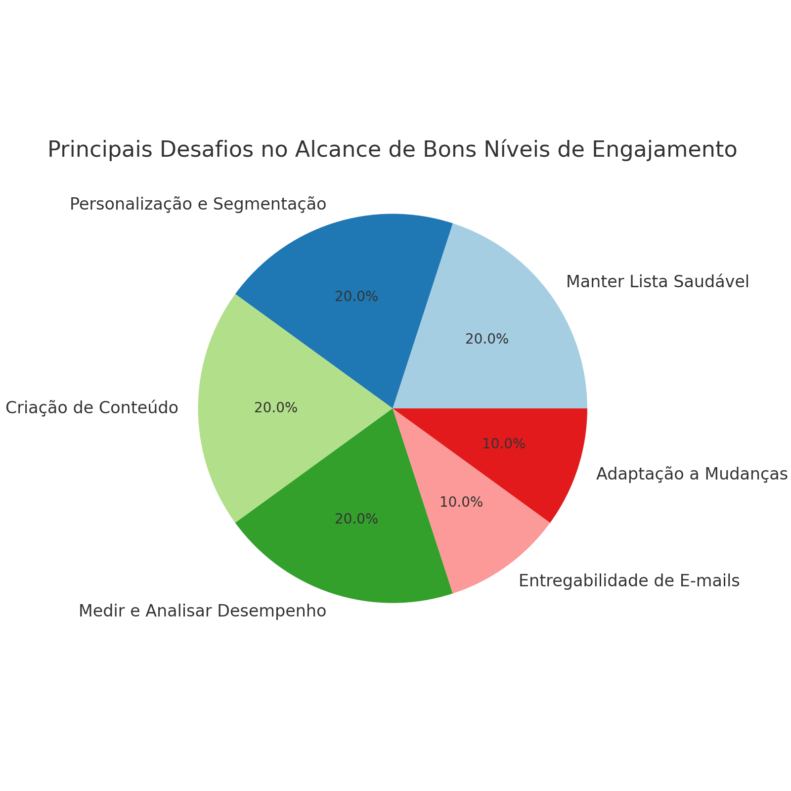

Relatório de Engajamento em E-mail Marketing
Tempo Médio para Atingir Bons Níveis de Engajamento
O tempo necessário para alcançar bons níveis de engajamento em campanhas de e-mail marketing pode variar bastante, dependendo de vários fatores, como a qualidade da lista de e-mails, a relevância do conteúdo e as estratégias utilizadas. No entanto, aqui estão algumas referências de diferentes fontes sobre o período médio para se atingir esse engajamento:
- GetResponse: Sugere que com a implementação de práticas de automação e segmentação, é possível ver melhorias significativas em 3 a 6 meses. Fonte
- Gartner: Indica que a segmentação e personalização são essenciais e que o tempo médio para atingir bons níveis de engajamento varia entre 3 a 6 meses. Fonte
- SendGrid: Observa que ajustes contínuos e a implementação de melhores práticas podem levar a melhorias nas taxas de abertura e clique em cerca de 3 a 6 meses. Fonte
- Brevo: Recomenda seguir melhores práticas e otimização contínua, afirmando que resultados significativos podem ser observados dentro de 3 a 6 meses. Fonte
- Email on Acid: Enfatiza a importância do tempo e esforço na qualidade do conteúdo para alcançar engajamento, mencionando um período similar de 3 a 6 meses. Fonte
Gráfico: Tempo Médio para Atingir Bons Níveis de Engajamento
Principais Desafios no Alcance de Bons Níveis de Engajamento
Os principais desafios no alcance de bons níveis de engajamento em campanhas de e-mail marketing incluem:
- Manter uma Lista de E-mails Saudável: Garantir que os endereços de e-mail na lista são válidos e que os destinatários estão realmente interessados no conteúdo enviado. Listas compradas ou mal gerenciadas podem resultar em altas taxas de rejeição (bounce rate) e cancelamentos de assinatura (unsubscribe rate). Fonte
- Personalização e Segmentação: Personalizar e segmentar e-mails para diferentes grupos de audiência pode ser desafiador, mas é crucial para aumentar a taxa de abertura e cliques. Utilizar as ferramentas adequadas e dados precisos para criar campanhas segmentadas e personalizadas pode exigir investimentos em tecnologia e tempo. Fonte
- Criação de Conteúdo Atraente: Criar e-mails com conteúdo interessante e relevante que mantenha os destinatários engajados é fundamental. Isso inclui a criação de linhas de assunto atraentes, chamadas para ação (CTAs) eficazes e design visualmente agradável. Realizar testes A/B para descobrir o que funciona melhor em termos de conteúdo, design e horários de envio é um processo contínuo. Fonte
- Medir e Analisar o Desempenho: Determinar quais métricas de desempenho são mais importantes para suas campanhas e acompanhar essas métricas de forma consistente. Analisar os dados de desempenho das campanhas para fazer ajustes informados pode ser complexo e requer habilidade analítica. Fonte
- Entregabilidade de E-mails: Garantir que os e-mails cheguem à caixa de entrada dos destinatários e não sejam marcados como spam. Utilizar práticas como SPF, DKIM e DMARC para autenticar e-mails e melhorar a reputação do remetente. Fonte
- Adaptação a Mudanças na Privacidade e Tecnologias: Cumprir com leis de privacidade de dados, como o GDPR e o CAN-SPAM, que impactam como os dados de e-mail podem ser coletados e utilizados. Adaptar-se a mudanças, como a proteção de privacidade do Mail da Apple, que afeta a precisão das taxas de abertura. Fonte
Gráfico: Principais Desafios no Alcance de Bons Níveis de Engajamento
